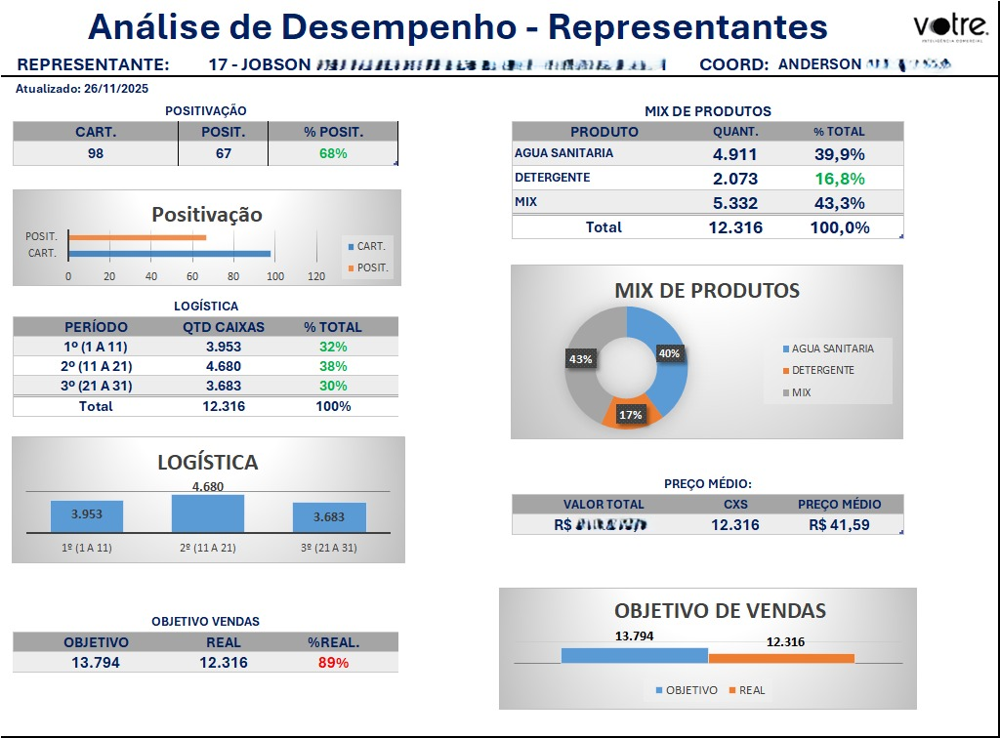
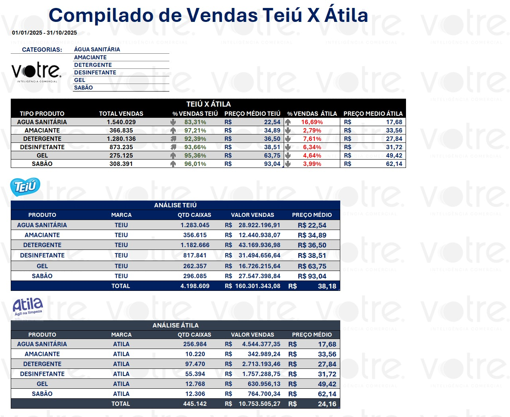
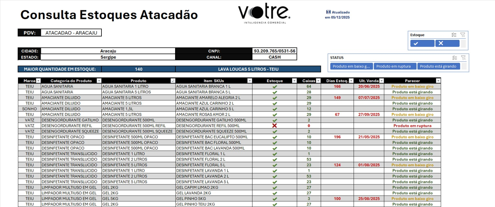

Sobre Mim
Sou estudante de Bacharelado em Sistemas de Informação, cursando o 6º semestre, e atuo há 10
meses na área administrativa/analítica. Nesse período, desenvolvi forte domínio em Excel
avançado, modelagem de dados e construção de relatórios estratégicos, incluindo dashboards,
calculadoras comerciais, KPIs e automatizações voltadas ao time de vendas. Também aplico
conceitos de Business Intelligence (BI) para criação de painéis,
análises comparativas e consolidação de bases volumosas de dados.
Tenho perfil analítico, raciocínio lógico sólido e a capacidade de transformar
dados brutos em informações úteis para a tomada de decisão. Meu objetivo é evoluir
profissionalmente para cargos de análise de dados, inteligência comercial ou áreas de tecnologia
voltadas a soluções analíticas e tomada de decisões.
Habilidades & Skills
Projetos
Dashboard de KPIs dos Representantes: consolidação de metas, positivação, preço médio, logística e mix.
Calculadora de Bonificações: sistema realiza cálculo automático, aplicando conehcimentos de engenharia de regras e domínio da regra de negócios.

Relatório de Positivação por Categoria, Período e RCA: uso de CONT.SES, modelagem de dados, filtragem dinâmica e estruturaçôes profissionais.

Comparativo de Vendas e Preço Médio por Categoria:: fórmulas avançadas, análise de dados e interpretação de indicadores.
Painel de Consultas de Estoque: lógica analítica e modelagem de dados, domínio de excel avançado, otimização e performance de dados.
Contato
Email Principal: jonatasssantos18@gmail.com
Email Secundário: johnssillva2021@gmail.com
Telefone: (77) 98809-0431
WhatsApp: Enviar mensagem
LinkedIn: Perfil profissional